Μάθημα 1: Η πρώτη μου βάση δεδομένων¶
Βάση δεδομένων: η game_library, μια βιβλιοθήκη βιντεοπαιχνιδιών με έναν πίνακα, δέκα εγγραφές και τις πρώτες ερωτήσεις προς τη βάση
Διάρκεια: 2 κύκλοι × περίπου 45′ εργασία (2 διδακτικές ώρες)
Φύλλο εργασίας
Αυτή η σελίδα εξηγεί τις έννοιες. Οι ασκήσεις και οι οδηγίες για κάθε κύκλο βρίσκονται στο Φύλλο εργασίας 1. Δούλεψε με τις δύο σελίδες ανοιχτές.
Αρχεία εργαστηρίου¶
| Αρχείο | Κύκλος |
|---|---|
| 01-more-games.sql | 2 |
Η αποστολή¶
Η παρέα σου έχει δέκα βιντεοπαιχνίδια και κανείς δεν θυμάται ποιο κοστίζει πόσο, ποιο βγήκε πότε και
ποιο είναι τι είδους. Σε αυτό το μάθημα τα βάζεις σε μια βάση δεδομένων: φτιάχνεις τη βάση
game_library, τον πίνακα games, προσθέτεις παιχνίδια με δύο τρόπους και μετά ρωτάς τη βάση «τι
έχεις;».
Δεν θα γράψεις ακόμη κώδικα Python. Θα ξεκινήσεις τον εξυπηρετητή της βάσης, θα γνωρίσεις τα δύο εργαλεία που θα χρησιμοποιείς σε όλο το μάθημα (το XAMPP και το phpMyAdmin) και θα καταλάβεις πώς είναι οργανωμένα τα δεδομένα. Όλα τα επόμενα μαθήματα, μέχρι και το project στο τέλος, χτίζονται πάνω σε αυτά: από το Μάθημα 3 η Python θα μιλά με την ίδια βάση.
Στο τέλος θα μπορείς¶
- να εξηγείς τι είναι βάση δεδομένων, ΣΔΒΔ και SQL, και γιατί μια λίστα της Python δεν αρκεί.
- να ξεχωρίζεις βάση δεδομένων, πίνακα, εγγραφή και πεδίο.
- να περιγράφεις με δικά σου λόγια τη σχέση πελάτη–εξυπηρετητή (client–server).
- να ξεκινάς και να σταματάς τον Apache και τη MySQL από το XAMPP Control Panel.
- να ανοίγεις το phpMyAdmin και να διαβάζεις τη λίστα των βάσεων.
- να διαλέγεις τύπο δεδομένων (
INT,DECIMAL,VARCHAR) για μια στήλη. - να δημιουργείς βάση και πίνακα με πρωτεύον κλειδί
AUTO_INCREMENT. - να προσθέτεις εγγραφές με τη φόρμα και από αρχείο
.sql. - να εμφανίζεις τα δεδομένα ενός πίνακα και να βρίσκεις την εντολή SQL που έτρεξε το phpMyAdmin.
- να γράφεις και να τρέχεις μια πρώτη εντολή
SELECTστην καρτέλα SQL.
Πριν αρχίσεις¶
Δεν έχεις XAMPP;
Ξεκίνα από τη σελίδα Εγκατάσταση και ρύθμιση. Στους υπολογιστές του εργαστηρίου συνήθως υπάρχει ήδη.
- Φτιάξε έναν φάκελο για τα μαθήματα, π.χ.
python-mysql, και μέσα σε αυτόν τον φάκελο01-first-database. - Κατέβασε εκεί το αρχείο του πίνακα. Κράτησε ακριβώς το όνομα, με κατάληξη
.sql(όχι.sql.txt). Αν ο περιηγητής το ανοίξει ως κείμενο, χρησιμοποίησε δεξί κλικ στον σύνδεσμο και «Αποθήκευση συνδέσμου ως…». - Βρες το XAMPP Control Panel: Έναρξη, γράψε
xamppκαι άνοιξε το XAMPP Control Panel (το αρχείο είναι τοC:\xampp\xampp-control.exe).
Ο κύκλος εργασίας
Πρόβλεψη → εκτέλεση → σύγκριση → εξήγηση. Πριν πατήσεις ένα κουμπί ή τρέξεις μια εντολή, γράψε τι περιμένεις να συμβεί. Αν το αποτέλεσμα διαφέρει, βρήκες κάτι που αξίζει να καταλάβεις· δεν έκανες λάθος.
Κύκλος 1 — Τι είναι μια βάση δεδομένων¶
Σε αυτόν τον κύκλο μαθαίνεις τι είναι μια βάση δεδομένων, από ποια μέρη αποτελείται το εργαστήριό μας και πώς ξεκινά ο εξυπηρετητής.
1.1 Από τις μεταβλητές στις βάσεις δεδομένων¶
Στα προγράμματα Python που έχεις γράψει, τα δεδομένα ζουν σε μεταβλητές και λίστες. Αυτά βρίσκονται στη μνήμη του υπολογιστή και υπάρχουν μόνο όσο τρέχει το πρόγραμμα. Όταν το πρόγραμμα τελειώσει, χάνονται:
Την επόμενη φορά που θα τρέξεις το πρόγραμμα, η λίστα ξεκινά πάλι από την αρχή. Φαντάσου τώρα μια εφαρμογή για μια βιβλιοθήκη παιχνιδιών με χιλιάδες τίτλους, που τη χρησιμοποιούν πολλοί άνθρωποι και πρέπει να τα θυμάται αύριο. Χρειαζόμαστε κάτι που να κρατά τα δεδομένα μόνιμα και να τα βρίσκει γρήγορα.
| Λίστα στην Python | Αρχείο κειμένου | Βάση δεδομένων | |
|---|---|---|---|
| Τα δεδομένα μένουν μετά το τέλος του προγράμματος | ✗ | ✓ | ✓ |
| «Βρες τα παιχνίδια κάτω από 10 €» | γράφεις βρόχο | γράφεις βρόχο και διάβασμα αρχείου | μία ερώτηση |
| Πολλά προγράμματα ή χρήστες ταυτόχρονα | ✗ | κίνδυνος να χαλάσει το αρχείο | ✓ |
| Έλεγχος ότι τα δεδομένα έχουν νόημα (π.χ. μοναδικός αριθμός αναγνώρισης) | ✗ | ✗ | ✓ |
Τρεις όροι που θα βλέπεις συνεχώς:
- Βάση δεδομένων (database): οργανωμένη συλλογή δεδομένων που αποθηκεύεται μόνιμα.
- ΣΔΒΔ (σύστημα διαχείρισης βάσεων δεδομένων, DBMS): το πρόγραμμα που διαχειρίζεται τη βάση. Αποθηκεύει, βρίσκει, αλλάζει και προστατεύει τα δεδομένα. Εμείς θα χρησιμοποιήσουμε τη MySQL.
- SQL (Structured Query Language): η γλώσσα στην οποία «μιλάμε» στο ΣΔΒΔ. Διαβάζεται σχεδόν σαν
αγγλική πρόταση, π.χ.
SELECT title FROM games.
Σκέψου μια βιβλιοθήκη: οι αναγνώστες δεν μπαίνουν στην αποθήκη να ψάξουν μόνοι τους. Δίνουν ένα σημείωμα στον βιβλιοθηκονόμο και παίρνουν το βιβλίο. Το ΣΔΒΔ είναι ο βιβλιοθηκονόμος και η SQL είναι το σημείωμα.
MySQL ή MariaDB;
Το XAMPP δεν περιέχει την πρωτότυπη MySQL αλλά τη MariaDB, ένα «αδελφό» πρόγραμμα που δημιούργησαν οι ίδιοι άνθρωποι που έφτιαξαν τη MySQL. Οι εντολές SQL που θα μάθουμε είναι ίδιες και στα δύο, και το κουμπί στο XAMPP λέγεται ακόμη «MySQL». Στο υλικό γράφουμε MySQL.
1.2 Πίνακες, εγγραφές και πεδία¶
Μια βάση δεδομένων οργανώνει τα δεδομένα σε πίνακες. Ένας πίνακας μοιάζει με το φύλλο ενός υπολογιστικού φύλλου:
id |
title |
genre |
release_year |
price |
|---|---|---|---|---|
| 1 | Star Dodger | Arcade | 2021 | 4.99 |
| 2 | Pixel Racer | Αγωνιστικό | 2020 | 9.99 |
| 3 | Puzzle Garden | Παζλ | 2022 | 2.99 |
- Ο πίνακας (table) περιγράφει ένα είδος πραγμάτων. Αυτός εδώ λέγεται
gamesκαι περιγράφει παιχνίδια. - Κάθε γραμμή λέγεται εγγραφή (record) και περιγράφει ένα πράγμα, εδώ ένα παιχνίδι.
- Κάθε στήλη λέγεται πεδίο (field) και κρατά ένα χαρακτηριστικό: τον τίτλο, το είδος, τη χρονιά, την τιμή.
- Η τομή μιας γραμμής και μιας στήλης είναι μια τιμή, π.χ. το
9.99.
Ένας εξυπηρετητής μπορεί να έχει πολλές βάσεις, μια βάση πολλούς πίνακες, και ένας πίνακας πολλές εγγραφές:
Εξυπηρετητής MySQL
├── βάση δεδομένων game_library
│ └── πίνακας games
│ ├── εγγραφή 1: 1 | Star Dodger | Arcade | 2021 | 4.99
│ ├── εγγραφή 2: 2 | Pixel Racer | Αγωνιστικό | 2020 | 9.99
│ └── ...
└── άλλες βάσεις (π.χ. του συστήματος, ή άλλων μαθητών)
Σε αυτό το μάθημα η βάση έχει έναν πίνακα. Στο Μάθημα 11 θα φτιάξεις βάσεις με πολλούς πίνακες που συνδέονται μεταξύ τους.
1.3 Ο εξυπηρετητής και οι πελάτες¶
Η MySQL δεν είναι εφαρμογή με παράθυρο που ανοίγεις και κλείνεις. Τρέχει στο παρασκήνιο, περιμένει και απαντά. Ονομάζεται εξυπηρετητής (server). Όποιος θέλει κάτι από αυτόν είναι πελάτης (client): στέλνει ένα ερώτημα SQL και παίρνει μια απάντηση.
φυλλομετρητής ──► Apache + phpMyAdmin ──┐
├──► εξυπηρετητής MySQL ──► αρχεία δεδομένων
πρόγραμμα Python ───────────────────────┘ (θύρα 3306)
- Το phpMyAdmin είναι πελάτης. Είναι ιστοσελίδα (γραμμένη σε PHP) που στέλνει SQL στη MySQL και εμφανίζει τις απαντήσεις με κουμπιά και πίνακες. Επειδή είναι ιστοσελίδα, χρειάζεται τον Apache, έναν εξυπηρετητή ιστοσελίδων.
- Το πρόγραμμα Python (από το Μάθημα 3) θα είναι κι αυτό πελάτης. Θα μιλά απευθείας με τη MySQL, χωρίς Apache.
- Η διεύθυνση του εξυπηρετητή είναι ο υπολογιστής (host, εδώ
localhost, δηλαδή «αυτός ο υπολογιστής») και η θύρα (port), δηλαδή ο «αριθμός θύρας» στον οποίο ακούει. Η MySQL ακούει στη θύρα3306.
Από αυτά προκύπτει ο πρώτος κανόνας του μαθήματος: αν δεν τρέχει ο εξυπηρετητής, καμία εφαρμογή δεν μπορεί να χρησιμοποιήσει τη βάση.
1.4 Το XAMPP¶
Το XAMPP είναι ένα πακέτο που εγκαθιστά με μία κίνηση όλα όσα χρειάζεται ένας υπολογιστής για να τρέχει εφαρμογές ιστού και βάσεων:
| Στοιχείο | Τι είναι | Το χρειαζόμαστε; |
|---|---|---|
| Apache | εξυπηρετητής ιστοσελίδων | ναι, για το phpMyAdmin |
| MySQL (MariaDB) | ο εξυπηρετητής της βάσης | ναι, είναι η βάση μας |
| phpMyAdmin | εφαρμογή ιστού για τη διαχείριση βάσεων | ναι |
| PHP | η γλώσσα στην οποία είναι γραμμένο το phpMyAdmin | δεν τη γράφουμε εμείς |
| FileZilla, Mercury, Tomcat | εξυπηρετητές αρχείων, αλληλογραφίας και Java | όχι |
Ο έλεγχος γίνεται από το XAMPP Control Panel: μια γραμμή για κάθε στοιχείο, με κουμπιά Start / Stop.
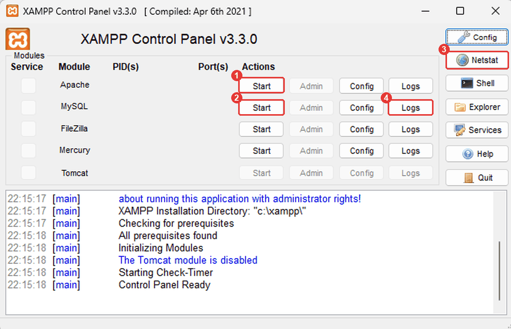
Τα κουμπιά 1 και 2 ξεκινούν τα στοιχεία. Τα 3 και 4 θα σου χρειαστούν αν κάτι δεν πάει καλά (δες τον πίνακα παρακάτω).
- Στη γραμμή Apache πάτα Start.
- Στη γραμμή MySQL πάτα Start.
- Αν όλα πήγαν καλά, τα ονόματα των δύο στοιχείων γίνονται πράσινα και εμφανίζονται οι αριθμοί
των θυρών: Apache
80, 443και MySQL3306.
Στο τέλος της ώρας πάτα Stop και στα δύο. Έτσι η MySQL κλείνει σωστά και αποθηκεύει ό,τι είχε στη μνήμη της.
| Τι βλέπεις | Πιθανή αιτία | Τι κάνεις |
|---|---|---|
| Ο Apache δεν ξεκινά και το μήνυμα λέει ότι η θύρα 80 χρησιμοποιείται | άλλο πρόγραμμα έχει πιάσει τη θύρα 80 | πάτα Netstat στο Control Panel για να δεις ποιο· ρώτα τον εκπαιδευτικό |
| Η MySQL ξεκινά και σταματά αμέσως | η θύρα 3306 είναι πιασμένη, ή τρέχει ήδη άλλη MySQL | πάτα Logs δίπλα στη MySQL και διάβασε τις τελευταίες γραμμές· ρώτα τον εκπαιδευτικό |
Ο φυλλομετρητής δεν ανοίγει το localhost/phpmyadmin |
ο Apache δεν τρέχει | πάτα Start στον Apache |
Το phpMyAdmin ανοίγει αλλά γράφει σφάλμα σύνδεσης (#2002) |
η MySQL δεν τρέχει | πάτα Start στη MySQL |
Μόνο για τοπική χρήση
Το XAMPP είναι ρυθμισμένο για να δουλεύει εύκολα στον δικό σου υπολογιστή: ο χρήστης root δεν
έχει κωδικό. Δεν είναι ρύθμιση για υπολογιστή που βλέπουν άλλοι από το δίκτυο. Στο Μάθημα 17
θα μάθεις να ασφαλίζεις μια βάση.
1.5 Το phpMyAdmin¶
Για να ανοίξεις το phpMyAdmin, πάτα Admin στη γραμμή της MySQL στο Control Panel, ή γράψε στον φυλλομετρητή:
Η οθόνη έχει τρία μέρη:
- Αριστερά (1): το δέντρο των βάσεων. Πατώντας ένα όνομα ανοίγει η βάση και φαίνονται οι πίνακές της.
- Πάνω (2): οι καρτέλες (tabs), που αλλάζουν ανάλογα με το τι έχεις επιλέξει: τον εξυπηρετητή, μια βάση ή έναν πίνακα.
- Στη μέση (3): η σελίδα της επιλεγμένης καρτέλας. Στην αρχική σελίδα δείχνει τα στοιχεία του εξυπηρετητή: Server type και Server version, που θα σημειώσεις στο Στάδιο 1.
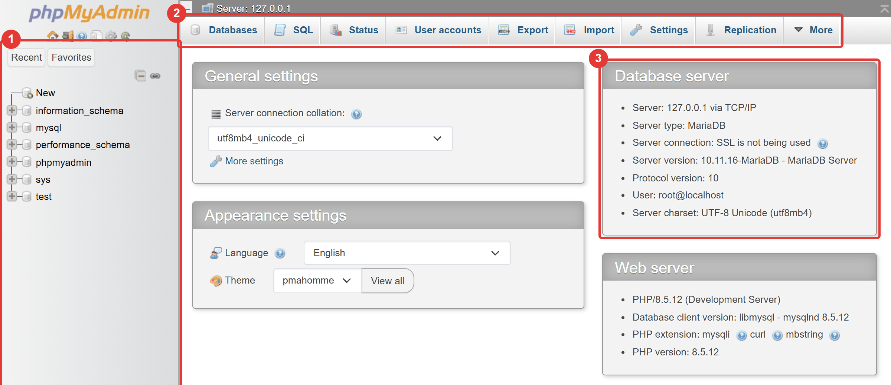
Στις εικόνες αυτού του μαθήματος, τα κόκκινα πλαίσια με αριθμούς δείχνουν πού πατάς, τι συμπληρώνεις ή τι πρέπει να κοιτάξεις. Οι αριθμοί αντιστοιχούν στη σειρά των βημάτων.
Βάλε το phpMyAdmin στα αγγλικά
Αν ο φυλλομετρητής σου είναι στα ελληνικά, το phpMyAdmin θα ανοίξει στα ελληνικά. Μπορείς να δουλέψεις και έτσι, αλλά είναι καλύτερα να το αλλάξεις: τα μηνύματα σφαλμάτων, τα εγχειρίδια και οι αναζητήσεις στο διαδίκτυο είναι στα αγγλικά, και σε αυτό το υλικό γράφουμε τα αγγλικά ονόματα.
Στην αρχική σελίδα (το εικονίδιο του σπιτιού πάνω αριστερά) βρες το Appearance settings («Ρυθμίσεις εμφάνισης») και στο Language διάλεξε English.
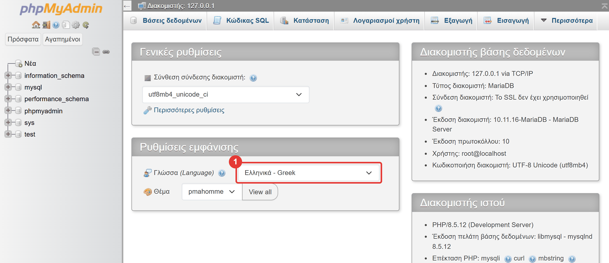
Αν προτιμάς τα ελληνικά, οι καρτέλες που θα χρησιμοποιήσεις λέγονται:
| English | Ελληνικά |
|---|---|
| Databases | Βάσεις δεδομένων |
| SQL | Κώδικας SQL |
| Structure | Δομή |
| Browse | Περιήγηση |
| Insert | Προσθήκη |
| Import | Εισαγωγή |
| Export | Εξαγωγή |
Μην πειράξεις τις βάσεις του συστήματος
Η λίστα έχει από την αρχή μερικές βάσεις που δεν είναι δικές σου: information_schema, mysql,
performance_schema, phpmyadmin, και ανάλογα με την έκδοση sys και test. Τις χρησιμοποιεί ο
ίδιος ο εξυπηρετητής. Μην αλλάξεις και μη σβήσεις τίποτα σε αυτές. Δικές σου θα είναι μόνο
όσες φτιάξεις εσύ.
Στάδιο 1 — Ξεκίνα τον εξυπηρετητή¶
Δεν υπάρχει αρχείο για αυτό το στάδιο. Ακολούθησε τα βήματα των ενοτήτων 1.4 και 1.5:
- Άνοιξε το XAMPP Control Panel και ξεκίνα τον Apache και τη MySQL.
- Άνοιξε το phpMyAdmin από το κουμπί Admin της MySQL.
- Βάλε το phpMyAdmin στα αγγλικά.
- Άνοιξε την καρτέλα Databases και δες ποιες βάσεις υπάρχουν.
Στην αρχική σελίδα του phpMyAdmin υπάρχουν στοιχεία για τον εξυπηρετητή: Server version (έκδοση εξυπηρετητή) και Server type (τύπος: MariaDB ή MySQL). Σημείωσέ τα στο φύλλο εργασίας.
Συνέχισε στο Φύλλο εργασίας, Κύκλος 1.
Κύκλος 2 — Η πρώτη βάση, ο πρώτος πίνακας, τα πρώτα δεδομένα¶
Σε αυτόν τον κύκλο φτιάχνεις τη βάση game_library, τον πίνακα games και τον γεμίζεις με
δεδομένα.
2.1 Ονόματα¶
Στα ονόματα βάσεων, πινάκων και στηλών ακολουθούμε τις ίδιες συμβάσεις που ακολουθείς στα ονόματα μεταβλητών της Python:
- Αγγλικά, με πεζά γράμματα και
_ανάμεσα στις λέξεις:game_library,release_year. - Χωρίς κενά και παύλες, και χωρίς ελληνικά στα ονόματα. (Μπορεί να δουλέψουν, αλλά δημιουργούν προβλήματα σε εργαλεία και προγράμματα.) Τα ελληνικά μπαίνουν στις τιμές, όχι στα ονόματα.
- Ο πίνακας παίρνει όνομα στον πληθυντικό (
games), η στήλη στον ενικό (title). - Η στήλη που ξεχωρίζει τις εγγραφές λέγεται
id.
| Σωστό | Λάθος (δεν ακολουθεί τη σύμβαση) |
|---|---|
game_library |
Game Library, Παιχνίδια |
release_year |
release-year, ReleaseYear |
games |
2games |
2.2 Τύποι δεδομένων¶
Κάθε στήλη έχει τύπο που λέει ποιες τιμές δέχεται. Είναι η ίδια ιδέα με τους τύπους της Python:
| Τι κρατά | Python | MySQL | Παράδειγμα |
|---|---|---|---|
| ακέραιος αριθμός | int |
INT |
2021 |
| δεκαδικός αριθμός με σταθερά δεκαδικά | float |
DECIMAL(5,2) |
19.99 |
| κείμενο | str |
VARCHAR(100) |
'Star Dodger' |
| ημερομηνία | datetime.date |
DATE |
'2024-03-15' |
| ναι / όχι | bool |
BOOLEAN |
TRUE |
Σε αυτό το μάθημα θα χρησιμοποιήσεις τους τρεις πρώτους. Οι άλλοι έρχονται στο Μάθημα 9.
INT: ακέραιοι αριθμοί με τους οποίους θα κάνεις πράξεις ή συγκρίσεις (χρονιά, πόντοι).VARCHAR(n): κείμενο μέχριnχαρακτήρες. Τοnτο διαλέγεις εσύ, με λογικό περιθώριο:VARCHAR(100)για τίτλο,VARCHAR(30)για είδος.DECIMAL(p, s): δεκαδικός αριθμός μεpψηφία συνολικά καιsμετά την υποδιαστολή. ΤοDECIMAL(5,2)δέχεται από-999.99έως999.99. Το χρησιμοποιούμε για χρήματα.
Γιατί όχι FLOAT για τις τιμές;
Οι δεκαδικοί αριθμοί κινητής υποδιαστολής δεν είναι ακριβείς. Δοκίμασε στην Python
print(0.1 + 0.2) και θα δεις 0.30000000000000004. Για ένα κατάστημα που προσθέτει χιλιάδες
τιμές, το σφάλμα μεγαλώνει. Το DECIMAL κρατά ακριβώς τα ψηφία που ορίζεις.
Το τηλέφωνο είναι κείμενο
Ένα τηλέφωνο όπως το 6912345678 ή ένας ΤΚ όπως το 01234 δεν είναι INT: δεν κάνεις
πράξεις με αυτά και ένας INT θα έκοβε τα αρχικά μηδενικά. Κανόνας: αν δεν θα το προσθέσεις ή δεν
θα το συγκρίνεις ως αριθμό, είναι VARCHAR.
Μια στήλη μπορεί επίσης να επιτρέπει NULL. Το NULL σημαίνει «άγνωστη ή κενή τιμή» και δεν
είναι ούτε 0 ούτε κενό κείμενο. Σε αυτό το μάθημα όλες οι στήλες θα απαιτούν τιμή (NOT NULL).
Στο Μάθημα 8 θα μάθεις πότε το NULL είναι χρήσιμο.
2.3 Πρωτεύον κλειδί και AUTO_INCREMENT¶
Δύο παιχνίδια μπορεί να έχουν τον ίδιο τίτλο ή το ίδιο είδος. Χρειαζόμαστε κάτι που ξεχωρίζει με βεβαιότητα κάθε εγγραφή. Αυτό είναι το πρωτεύον κλειδί (primary key): μια στήλη της οποίας η τιμή
- είναι μοναδική: δεν υπάρχουν δύο εγγραφές με την ίδια τιμή,
- δεν είναι ποτέ κενή,
- δεν αλλάζει.
Συνήθως είναι ένας αριθμός με όνομα id. Δεν θέλουμε να τον γράφουμε εμείς, γιατί θα κάναμε λάθη.
Γι' αυτό η στήλη ορίζεται AUTO_INCREMENT: κάθε φορά που προσθέτεις εγγραφή χωρίς id, η βάση
δίνει μόνη της τον επόμενο αριθμό (1, 2, 3, ...). Ένας αριθμός που δόθηκε δεν ξαναχρησιμοποιείται,
ακόμη κι αν σβήσεις την εγγραφή. Θα το δεις με δικό σου πείραμα στο φύλλο εργασίας.
2.4 Δημιουργία βάσης και πίνακα στο phpMyAdmin¶
Η βάση
- Άνοιξε την καρτέλα Databases.
- Στο Create database γράψε
game_library(1). Στη λίστα δίπλα (σύνθεση, collation) άφησεutf8mb4_general_ci(2). - Πάτα Create (3).
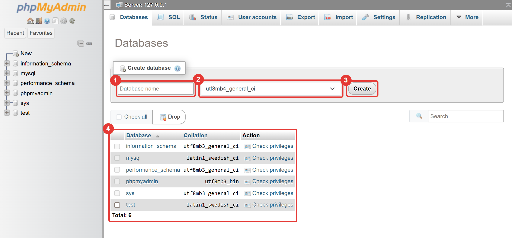
Το πλαίσιο 4 δείχνει τις βάσεις του συστήματος, που υπάρχουν από την αρχή και δεν είναι δικές σου.
Ελληνικά που γίνονται ???
Η σύνθεση (collation) ορίζει ποιους χαρακτήρες δέχεται και πώς τους ταξινομεί η βάση. Για να
αποθηκεύονται σωστά τα ελληνικά πρέπει να είναι utf8mb4_…. Το XAMPP την έχει ήδη προεπιλεγμένη.
Αν δεις latin1_…, άλλαξέ την, αλλιώς τα ελληνικά θα εμφανίζονται ως ????.
Ο πίνακας
Μετά τη δημιουργία, το phpMyAdmin ανοίγει τη νέα βάση. Γράφει «No tables found in database»: είναι φυσιολογικό, η βάση είναι άδεια.
-
Στο Create new table γράψε όνομα πίνακα
games(1) και αριθμό στηλών5(2). Πάτα Create (3).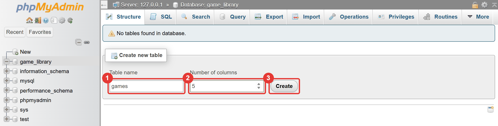
-
Στη φόρμα που ανοίγει, συμπλήρωσε μία γραμμή για κάθε στήλη, όπως στον πίνακα:
Name Type Length/Values Null Index A_I idINT☐ PRIMARY☑ titleVARCHAR100☐ ☐ genreVARCHAR30☐ ☐ release_yearINT☐ ☐ priceDECIMAL5,2☐ ☐ Η φόρμα είναι πιο πλατιά από την οθόνη. Στο αριστερό μέρος της συμπληρώνεις τα Name (1), Type (2) και Length/Values (3):
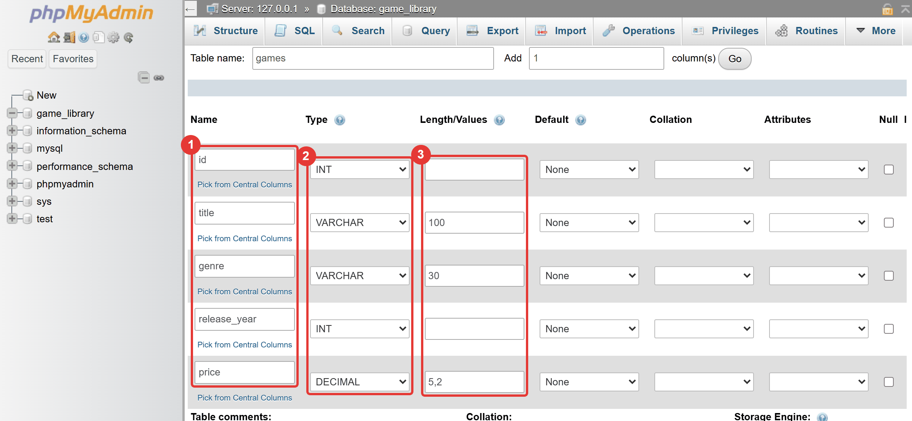
Για να δεις τις υπόλοιπες στήλες, κύλησε τη φόρμα προς τα δεξιά (με την οριζόντια μπάρα κάτω από τη φόρμα). Εκεί αφήνεις τα Null (1) ξετσεκαρισμένα, διαλέγεις Index
PRIMARY(2) και τσεκάρεις το A_I (3), όλα στη γραμμή τουid: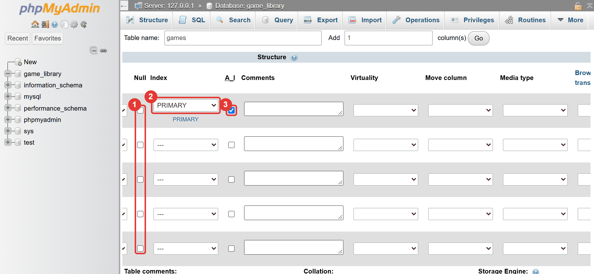
-
Πάτα Preview SQL (κάτω δεξιά, δίπλα στο Save). Το phpMyAdmin δείχνει την εντολή που θα στείλει στη MySQL. Διάβασέ την (βλέπε παρακάτω) και πάτα Close.
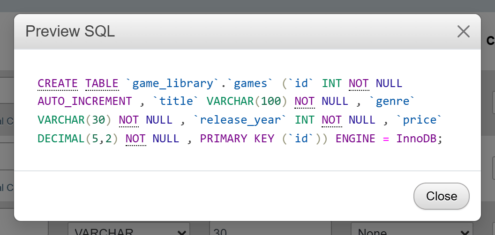
-
Πάτα Save.
Τι σημαίνουν οι στήλες της φόρμας:
- Null (άδειο): η στήλη δεν δέχεται
NULL. Το αφήνουμε ξετσεκαρισμένο παντού. - Index =
PRIMARY: η στήλη είναι το πρωτεύον κλειδί. - A_I (auto increment): η αρίθμηση γίνεται αυτόματα. Όταν τσεκάρεις το A_I, το phpMyAdmin βάζει
μόνο του και το
PRIMARY.
Το αποτέλεσμα στην καρτέλα Structure πρέπει να είναι αυτό (το πλαίσιο 1 δείχνει τη γραμμή του
id, με το κλειδί, το AUTO_INCREMENT και το No στο Null):
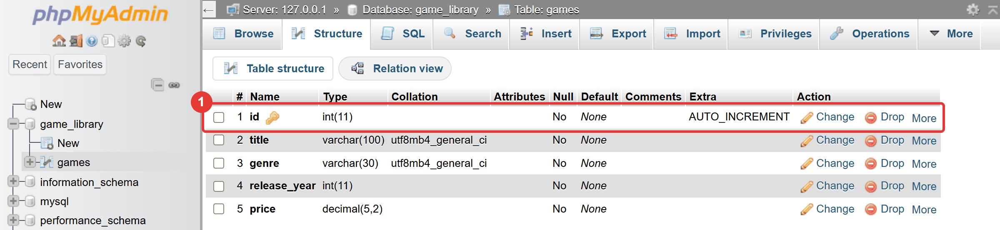
Με λόγια:
| # | Name | Type | Null | Extra |
|---|---|---|---|---|
| 1 | id 🔑 |
int(11) |
No | AUTO_INCREMENT |
| 2 | title |
varchar(100) |
No | |
| 3 | genre |
varchar(30) |
No | |
| 4 | release_year |
int(11) |
No | |
| 5 | price |
decimal(5,2) |
No |
Το (11) δίπλα στο INT είναι ιστορικό υπόλοιπο και δεν έχει σημασία για εμάς.
Η εντολή που έδειξε το Preview SQL είναι η CREATE TABLE:
CREATE TABLE `game_library`.`games` (
`id` INT NOT NULL AUTO_INCREMENT,
`title` VARCHAR(100) NOT NULL,
`genre` VARCHAR(30) NOT NULL,
`release_year` INT NOT NULL,
`price` DECIMAL(5,2) NOT NULL,
PRIMARY KEY (`id`)
) ENGINE = InnoDB;
(Το phpMyAdmin τη δείχνει σε μία γραμμή· εδώ την έσπασα σε γραμμές για να διαβάζεται.) Κάθε γραμμή της φόρμας έγινε μία γραμμή της εντολής:
| Κομμάτι | Τι σημαίνει |
|---|---|
CREATE TABLE game_library.games |
φτιάξε τον πίνακα games μέσα στη βάση game_library |
title VARCHAR(100) NOT NULL |
στήλη title, κείμενο έως 100 χαρακτήρες, υποχρεωτική τιμή |
id INT NOT NULL AUTO_INCREMENT |
στήλη id, ακέραιος, αριθμείται αυτόματα |
PRIMARY KEY (id) |
η στήλη id είναι το πρωτεύον κλειδί |
ENGINE = InnoDB |
ο τρόπος που αποθηκεύει τα δεδομένα η MySQL· κράτα την προεπιλογή |
Στάδιο 2 — Η βάση και ο πίνακας¶
Φτιάξε τη βάση game_library και τον πίνακα games όπως στην ενότητα 2.4. Έλεγξε την καρτέλα
Structure με τον πίνακα που δείχνει το αποτέλεσμα. Στο φύλλο εργασίας σημειώνεις τι είδες.
Συνέχισε στο Φύλλο εργασίας, Κύκλος 2.
2.5 Προσθήκη εγγραφών: η καρτέλα Insert¶
- Επίλεξε τον πίνακα
games(πάτα το όνομά του στο αριστερό δέντρο). - Άνοιξε την καρτέλα Insert.
- Η φόρμα έχει μία γραμμή για κάθε πεδίο. Συμπλήρωσε τη στήλη Value για τα
title,genre,release_yearκαιprice(2). Άφησε τοidκενό (1): το βάζει η βάση. - Πάτα Go (3).
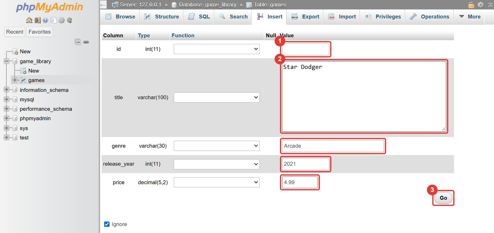
Το phpMyAdmin απαντά με «1 row inserted» και δείχνει το Inserted row id: 1 (1). Δες και το κείμενο
που εμφανίζει από κάτω (2). Είναι η εντολή SQL που έστειλε στη MySQL:
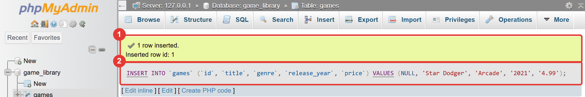
INSERT INTO `games` (`id`, `title`, `genre`, `release_year`, `price`)
VALUES (NULL, 'Star Dodger', 'Arcade', '2021', '4.99');
Δεν χρειάζεται να την απομνημονεύσεις. Μπορείς όμως ήδη να τη διαβάσεις:
| Κομμάτι | Τι σημαίνει |
|---|---|
INSERT INTO games |
πρόσθεσε μια εγγραφή στον πίνακα games |
(id, title, genre, release_year, price) |
αυτά είναι τα πεδία που θα γεμίσουν |
VALUES (...) |
αυτές είναι οι τιμές, με την ίδια σειρά |
NULL στη θέση του id |
«δεν δίνω αριθμό, βάλε εσύ τον επόμενο» (AUTO_INCREMENT) |
'Star Dodger' |
το κείμενο μπαίνει σε μονά εισαγωγικά |
Η δεύτερη φόρμα και το «Ignore»
Κάτω από την πρώτη φόρμα υπάρχει δεύτερη, για να προσθέτεις δύο εγγραφές μαζί. Όσο είναι τσεκαρισμένο το Ignore πάνω από αυτήν, η φόρμα αγνοείται.
Στάδιο 3 — Τρεις εγγραφές με τη φόρμα¶
Πρόσθεσε με τη φόρμα Insert αυτά τα τρία παιχνίδια. Προσοχή: όχι id.
title |
genre |
release_year |
price |
|---|---|---|---|
| Star Dodger | Arcade | 2021 | 4.99 |
| Pixel Racer | Αγωνιστικό | 2020 | 9.99 |
| Puzzle Garden | Παζλ | 2022 | 2.99 |
Πρόβλεψε πρώτα: τι id θα πάρει το τρίτο παιχνίδι; Μετά δες τι έγραψε το phpMyAdmin.
2.6 Εισαγωγή αρχείου SQL και εμφάνιση των δεδομένων¶
Το να γράφεις δέκα παιχνίδια με φόρμα είναι κουραστικό. Αν έχεις τις εντολές INSERT σε ένα αρχείο
.sql, η βάση τις εκτελεί όλες μαζί. Αυτό είναι χρήσιμο και στη δουλειά: έτσι μεταφέρονται και
αποθηκεύονται οι βάσεις (θα το δεις ξανά στο Μάθημα 18).
- Επίλεξε τη βάση
game_libraryστο αριστερό δέντρο. Η εισαγωγή πρέπει να γίνει με επιλεγμένη τη βάση, γιατί το αρχείο δεν λέει σε ποια βάση ανήκει ο πίνακαςgames. - Άνοιξε την καρτέλα Import.
-
Στο File to import πάτα Choose file και διάλεξε το
01-more-games.sql. (Σε ελληνικό φυλλομετρητή το κουμπί γράφει «Επιλογή αρχείου».) Όταν επιλεγεί, εμφανίζεται το όνομα του αρχείου δίπλα του (1).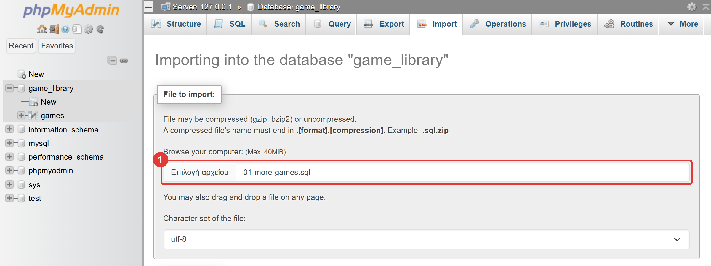
-
Άφησε τις υπόλοιπες ρυθμίσεις όπως είναι (Format:
SQL, Character set:utf-8). -
Κύλησε τη σελίδα μέχρι κάτω και πάτα Import (1). Θα δεις το μήνυμα «Import has been successfully finished» (2).
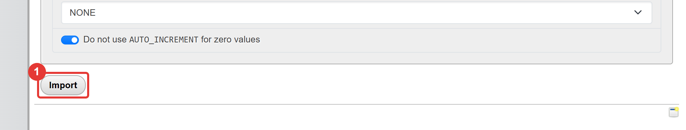
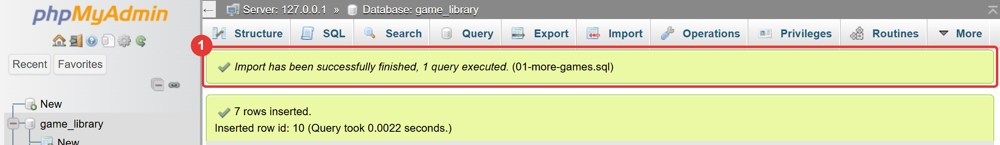
Το αρχείο έχει μία εντολή INSERT που προσθέτει επτά παιχνίδια. Άνοιξέ το και διάβασέ το:
-- Μάθημα 1 — Τα υπόλοιπα επτά παιχνίδια της βιβλιοθήκης.
--
-- Πώς το τρέχεις:
-- 1. Στο phpMyAdmin άνοιξε τη βάση game_library (πάτα το όνομά της αριστερά).
-- 2. Διάλεξε την καρτέλα Import, πάτα «Choose file» και διάλεξε αυτό το αρχείο.
-- 3. Πάτα Import (κάτω-κάτω).
--
-- Τα τρία πρώτα παιχνίδια τα έχεις ήδη προσθέσει με τη φόρμα.
-- Εδώ ΔΕΝ γράφουμε id: το βάζει η βάση μόνη της (AUTO_INCREMENT).
INSERT INTO games (title, genre, release_year, price) VALUES
('Dungeon of Echoes', 'Ρόλων', 2019, 19.99),
('Neon Soccer', 'Αθλητικό', 2023, 14.99),
('Castle Jumper', 'Πλατφόρμας', 2018, 7.49),
('Space Miners', 'Στρατηγικής', 2021, 12.99),
('Tiny Farm', 'Προσομοίωση', 2020, 6.99),
('Turbo Kart Cup', 'Αγωνιστικό', 2023, 17.99),
('Lost Lighthouse', 'Περιπέτεια', 2022, 11.49);
Οι γραμμές που αρχίζουν με -- είναι σχόλια, όπως τα # της Python. Στην εντολή δεν υπάρχει
στήλη id, ούτε NULL: όταν δεν αναφέρεις μια στήλη, παίρνει την προεπιλεγμένη τιμή της. Για το
id αυτή είναι ο επόμενος αριθμός.
Για να δεις τα δεδομένα, επίλεξε τον πίνακα games και άνοιξε την καρτέλα Browse. Θα δεις
δέκα εγγραφές (3) και το μήνυμα «Showing rows 0 - 9 (10 total)» (1). Πάνω από τον πίνακα, το
phpMyAdmin δείχνει πάλι την εντολή που έτρεξε, αυτή τη φορά μια ερώτηση:
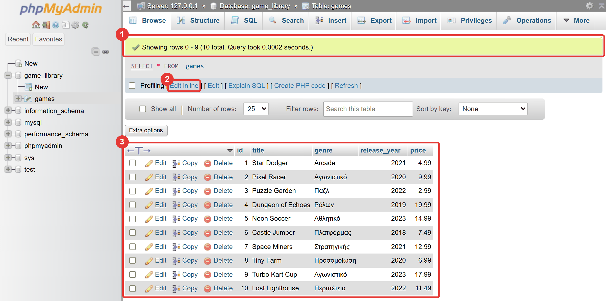
Η SELECT ζητά δεδομένα από έναν πίνακα. Το * σημαίνει «όλες οι στήλες». Στο Μάθημα 2 θα μάθεις να
τη γράφεις μόνος σου. Δοκίμασε όμως ήδη μια αλλαγή: πάτα Edit inline (2) κάτω από την εντολή, άλλαξε
το * σε title, price και πάτα Go. Η βάση επιστρέφει μόνο αυτές τις δύο στήλες.
2.7 Τι μας έδειξε το phpMyAdmin¶
Κάθε κλικ που έκανες σε αυτό το μάθημα έγινε εντολή SQL: η δημιουργία του πίνακα (CREATE TABLE),
κάθε εγγραφή (INSERT), κάθε προβολή (SELECT). Το phpMyAdmin σου χάρισε τον κόπο να τις γράψεις.
Ένα πρόγραμμα Python όμως δεν μπορεί να πατήσει κουμπιά. Θα στέλνει στη MySQL κείμενο SQL, γι'
αυτό η SQL είναι το επόμενο βήμα.
Ας γράψεις τώρα την πρώτη εντολή μόνος σου. Στην καρτέλα SQL της βάσης game_library
πληκτρολόγησε:
και πάτα Go (ή πάτα Ctrl + Enter).
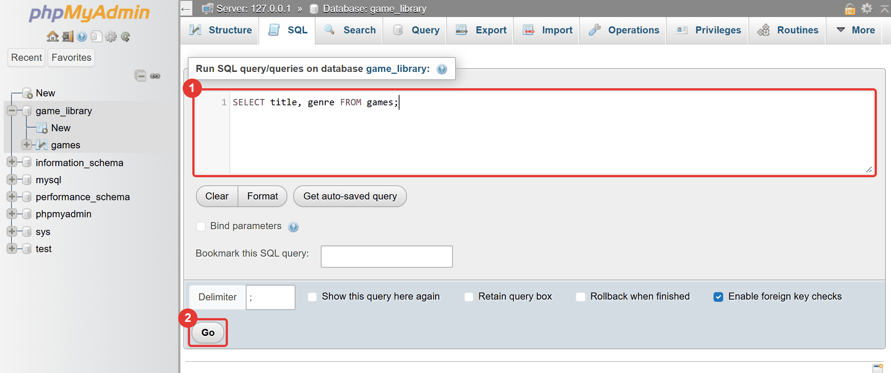
Η βάση επιστρέφει μόνο τις δύο στήλες που ζήτησες, με τη σειρά που τις έγραψες:
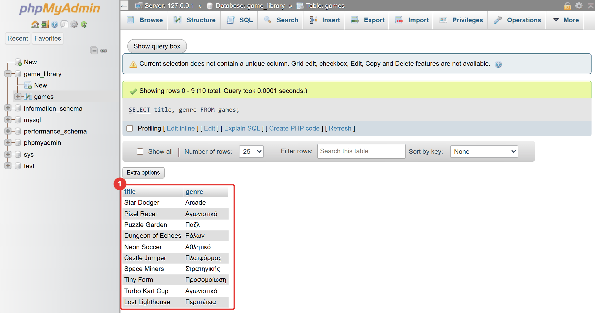
Αν
αντί για SELECT title, genre γράψεις SELECT genre, title, οι στήλες αλλάζουν σειρά. Στο Μάθημα 2
θα μάθεις όλη τη «γραμματική» της SELECT.
Μια ματιά μπροστά
Στο Μάθημα 3 θα γράψεις ένα πρόγραμμα Python που διαβάζει αυτόν τον πίνακα. Δεν χρειάζεται να το τρέξεις ακόμη. Δες απλώς πόσο μικρό είναι:
import mysql.connector
connection = mysql.connector.connect(
host="localhost", user="root", password="", database="game_library"
)
cursor = connection.cursor()
cursor.execute("SELECT title, price FROM games")
for title, price in cursor.fetchall():
print(title, price)
connection.close()
Η Python συνδέεται στον εξυπηρετητή, στέλνει ένα ερώτημα SQL και τυπώνει την απάντηση. Η ίδια ερώτηση που έκανες με το Edit inline.
Στάδιο 4 — Δέκα παιχνίδια και η πρώτη ερώτηση¶
- Εισήγαγε το
01-more-games.sql(ενότητα 2.6). - Άνοιξε την καρτέλα Browse και μέτρησε τις εγγραφές.
- Με το Edit inline, εμφάνισε μόνο τις στήλες
titleκαιprice. - Στην καρτέλα SQL γράψε μόνος σου μια
SELECTπου εμφανίζει τις στήλεςgenreκαιtitle(με αυτή τη σειρά).
Συνέχισε στο Φύλλο εργασίας, Κύκλος 2.
Έλεγχος πριν ολοκληρώσεις¶
- □ Ο Apache και η MySQL τρέχουν και το phpMyAdmin ανοίγει.
- □ Υπάρχει η βάση
game_libraryμε σύνθεσηutf8mb4_general_ci. - □ Ο πίνακας
gamesέχει πέντε στήλες και τοidείναι πρωτεύον κλειδί μεAUTO_INCREMENT. - □ Στην καρτέλα Browse φαίνονται δέκα παιχνίδια και τα ελληνικά εμφανίζονται σωστά.
- □ Μπορείς να εξηγήσεις γιατί το
idδεν το γράφεις εσύ. - □ Όταν τελείωσες, πάτησες Stop στον Apache και στη MySQL.
Για να θυμάσαι¶
- Η βάση δεδομένων κρατά τα δεδομένα μόνιμα. Οι μεταβλητές και οι λίστες της Python χάνονται όταν τελειώσει το πρόγραμμα.
- Μια βάση έχει πίνακες, ένας πίνακας έχει εγγραφές (γραμμές) και κάθε εγγραφή έχει πεδία (στήλες).
- Το ΣΔΒΔ (MySQL) είναι ο εξυπηρετητής. Το phpMyAdmin και τα προγράμματα Python είναι πελάτες που του στέλνουν SQL.
- Αν δεν τρέχει η MySQL, δεν δουλεύει τίποτα. Το phpMyAdmin χρειάζεται και Apache· η Python όχι.
- Κάθε στήλη έχει τύπο:
INTγια ακέραιους,DECIMALγια χρήματα,VARCHAR(n)για κείμενο. - Το πρωτεύον κλειδί ξεχωρίζει κάθε εγγραφή. Με
AUTO_INCREMENTτο δίνει η βάση. - Το phpMyAdmin δείχνει πάντα την εντολή SQL που έτρεξε. Διάβαζέ την.
- Ονόματα: αγγλικά, πεζά, με
_, χωρίς κενά. Τα ελληνικά μπαίνουν στις τιμές.
Λεξιλόγιο¶
βάση δεδομένων (database), ΣΔΒΔ (DBMS), SQL, πίνακας (table), εγγραφή (record),
πεδίο (field), τιμή, τύπος δεδομένων, πρωτεύον κλειδί (primary key),
AUTO_INCREMENT, NULL, εξυπηρετητής (server), πελάτης (client), host,
θύρα (port), σύνθεση (collation), ερώτημα (query), σχόλιο.
Δική σου εκδοχή¶
Αν τελειώσεις νωρίτερα, κάνε τη βάση δική σου, με μία αλλαγή τη φορά:
- Φτιάξε μια δεύτερη βάση με όνομα
my_collectionκαι έναν πίνακα για κάτι που σε ενδιαφέρει: ταινίες, τραγούδια, ποδοσφαιριστές, κάρτες. Διάλεξε προσεκτικά το όνομα και τον τύπο κάθε στήλης και πρόσθεσε πέντε εγγραφές. - Πρόσθεσε στον
gamesδικά σου αγαπημένα παιχνίδια με τη φόρμα. (Στο επόμενο μάθημα θα ξεκινήσουμε από έτοιμο αρχείο, οπότε δεν χρειάζεται να τα σβήσεις.) - Πρόκληση: το
priceείναιDECIMAL(5,2). Ποια είναι η μεγαλύτερη τιμή που χωράει; Πρόσθεσε ένα παιχνίδι με τιμή1234.50. Τι αποθηκεύτηκε; Έδειξε σφάλμα η βάση ή έκανε κάτι άλλο; Γιατί θα ήταν επικίνδυνο σε ένα πραγματικό κατάστημα;